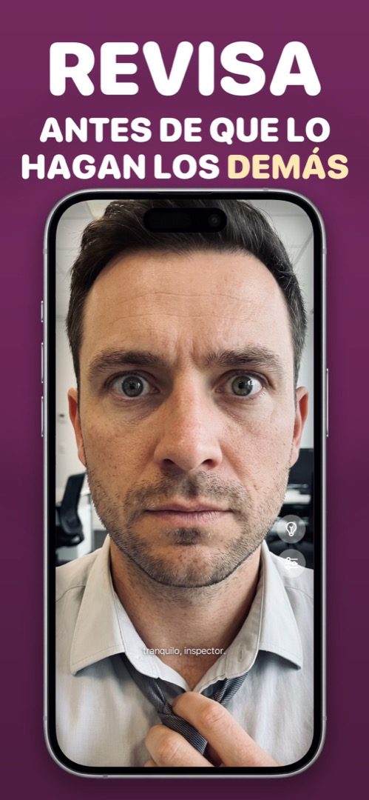

¿Por qué la cámara frontal de tu iPhone invierte tu cara?
Encuadras un selfie, en la vista previa todo parece normal, y la foto guardada se ve ligeramente mal: la raya del pelo al otro lado, una cara que se parece un poco menos a ti. No hay nada roto. Esto es lo que ocurre y qué puedes hacer.
Vista previa = espejo. Foto guardada = como te ven los demás.
Mientras encuadras un selfie, iOS refleja la vista previa para que parezca que te miras en un espejo: mueves la mano derecha y se mueve la mano de la derecha. Pero al pulsar el disparador, la foto se guarda sin reflejar, tal como te vería alguien de pie frente a ti.
El motivo por el que parece incorrecta está bien estudiado: el efecto de mera exposición. Has visto tu cara reflejada miles de veces al día durante toda tu vida, así que esa es la versión que tu cerebro considera «correcta». Ninguna cara es perfectamente simétrica, así que la foto sin reflejar parece un poco rara, para ti y solo para ti. Tus amigos están acostumbrados a la versión de las fotos.
El ajuste de iOS que lo cambia
Desde iOS 14 hay un interruptor: Ajustes → Cámara → Cámara frontal en espejo. Actívalo y los selfies se guardarán exactamente como aparecen en la vista previa. Eso arregla las fotos. No arregla el problema de fondo de usar la app Cámara como espejo: sigues con un disparador bajo el pulgar, sin luz frontal y con una vista previa llena de controles.
Por qué una app de espejo siempre está reflejada
Una app de espejo tiene un solo trabajo: comportarse como un cristal. No hay ninguna versión «guardada» que dar la vuelta, así que lo que ves es siempre la imagen reflejada a la que estás acostumbrado, con brillo máximo, y con zoom y aro de luz cuando los necesitas. Si solo quieres revisar tu aspecto y no capturarlo, esa es la herramienta.
Cómo hacerlo en Mirrorly
En Mirrorly la duda nunca surge, porque nunca se guarda nada. Para revisar tu aspecto:
- Abre Mirrorly. La cámara frontal se enciende, reflejada como un cristal real, y se queda así.
- Arregla lo que haga falta: pelo, cuello, dientes. Usa el control de zoom para los detalles y la bombilla en habitaciones oscuras.
- Cierra la app. No se ha hecho ninguna foto, así que no hay ninguna versión invertida esperando en tu biblioteca.

Mirrorly es gratis para probar en la App Store. Un espejo a pantalla completa para iPhone con aro de luz, zoom y brillo máximo. Tres revisiones gratis y después un pago único: sin suscripción, sin fotos guardadas, sin cuenta, sin anuncios.